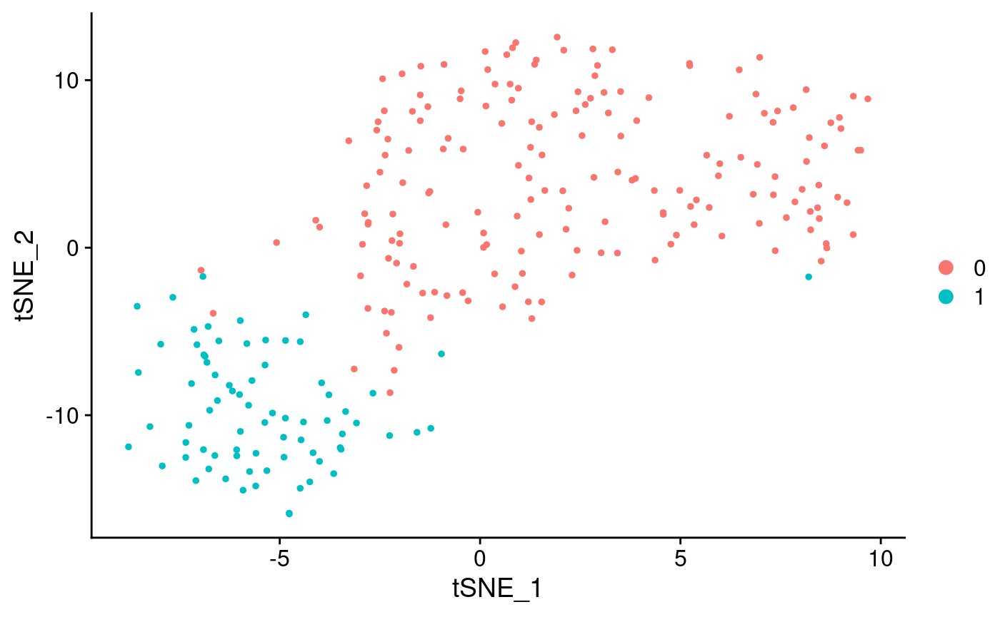
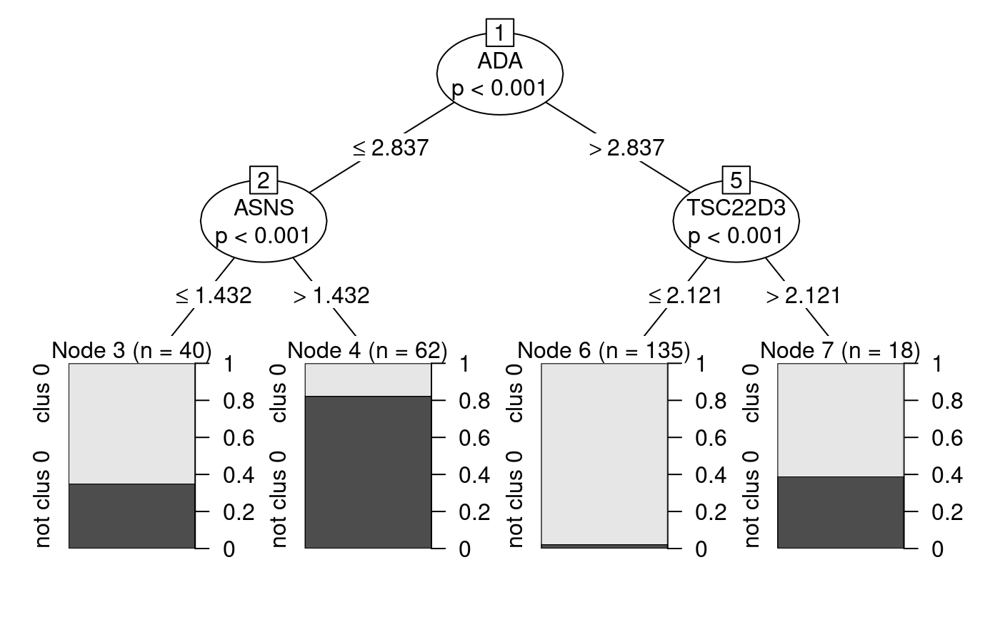

garnett.RmdReturning Garnett Classifiers
We provide an interface to export the decision trees as garnett classifiers for more information on the specification please visit: https://cole-trapnell-lab.github.io/garnett/docs/#submitting-a-classifier
## Loading required package: Seurat## Registered S3 method overwritten by 'R.oo':
## method from
## throw.default R.methodsS3## Registered S3 method overwritten by 'GGally':
## method from
## +.gg ggplot2##
## Attaching package: 'sctree'## The following objects are masked from 'package:Seurat':
##
## FindAllMarkers, FindConservedMarkers, FindMarkers
## Warning: The following arguments are not used: uniq, cells.use## Suggested parameter: cells instead of cells.use
## Warning: The following arguments are not used: uniq, cells.use## Suggested parameter: cells instead of cells.use
## > clus 0_node_3 (n = 40)
## expressed below: ADA 2.837, ASNS 1.432
##
## > clus 0_node_6 (n = 135)
## expressed above: ADA 2.837
## expressed below: TSC22D3 2.121
##
## > clus 0_node_7 (n = 18)
## expressed above: ADA 2.837, TSC22D3 2.121
##
## > not clus 0 (n = 62)
## expressed above: ASNS 1.432
## expressed below: ADA 2.837Exporting the garnett classifier to a file
## [1] "garnett.list"## > clus 0_node_3 (n = 40)
## expressed below: ADA 2.837, ASNS 1.432
##
## > clus 0_node_6 (n = 135)
## expressed above: ADA 2.837
## expressed below: TSC22D3 2.121
##
## > clus 0_node_7 (n = 18)
## expressed above: ADA 2.837, TSC22D3 2.121
##
## > not clus 0 (n = 62)
## expressed above: ASNS 1.432
## expressed below: ADA 2.837## [1] "character"